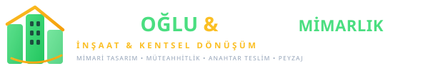

İstanbul'un farklı noktalarında hayata geçirdiğimiz tamamlanan referanslarımız ve yapımı devam eden şantiye projelerimiz.
14 katlı, çift bodrum otoparklı, C35 betonarme taşıyıcı sistem ve radye temel.
Güngören / Bahçelievler riskli yapı yıkımı, zemin güçlendirme ve kaba inşaat imalatı.
A1 sınıfı taşyünü yangın yalıtımlı cephe kaplama sistemleri ve mimari ince işler.
Sismik mukavemetli ağır yapısal çelik iskelet ve yangın kaçış koridorları.
Prekast betonarme tribün elemanları ve 72 metrelik çelik uzay kafes çatı.
-18m derin kazı emniyeti, 320 adet donatılı fore kazık ve ankraj mühendisliği.